Areal Interpolation of Attributes with QGIS
Turn-in for grading: This lab includes material that must be turned in for grading. Complete the required deliverables and submit them as instructed by the course.
Overview
This lab uses areal interpolation to estimate population totals for a set of watershed polygons.
The problem is that the population data and the reporting geography do not use the same boundaries:
CT_Block_Groupscontains the source population dataCT_Major_Basinscontains the watershed boundaries you want to summarize to
Because those polygon systems do not align, you cannot use a simple attribute join. Instead, you will:
- calculate the original area of each Census block group
- split block groups where they intersect watershed boundaries
- calculate the area of the resulting overlap polygons
- convert those overlap areas into weights
- use those weights to estimate population by watershed piece
- summarize the weighted population by watershed
Concept note: Areal interpolation is useful whenever attributes are reported for one set of polygons, but the question you want to answer belongs to another set of polygons. In this lab, the interpolation uses a simple area-weighting assumption.
Getting Ready
You will need:
- CT_Watershed_Data.gdb.zip
- the Group Stats plugin for QGIS
Install the Group Stats plugin
You will use Group Stats at the end of the lab to summarize weighted population by watershed.
- Open Plugins > Manage and Install Plugins.
- Search for
Group Stats. - Install the plugin.
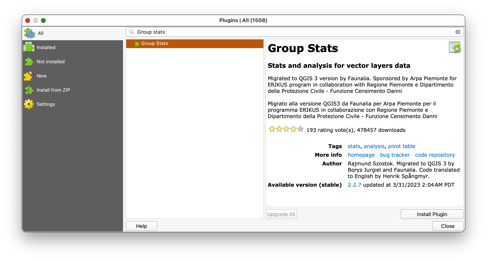
Concept note: Group Stats works like a pivot table. It is helpful when you need to group rows by one field and summarize the values from another field.
Download and unpack the data
- Download CT_Watershed_Data.gdb.zip.
- Unzip it somewhere stable on your computer.
- Create a new project folder for this lab.
- Save a new QGIS project in that folder as
areal_interpolation.qgz.
Part 1: Add the Layers and Get Oriented
- In the Browser panel, browse to the unzipped
CT_Watershed_Data.gdb. - Drag these layers into the map canvas in this order:
CT_State_BoundaryCT_Block_GroupsCT_Major_Basins
- Open the Layer Styling panel.
- Make the polygon fills transparent and the outlines visible so you can compare the boundary systems.
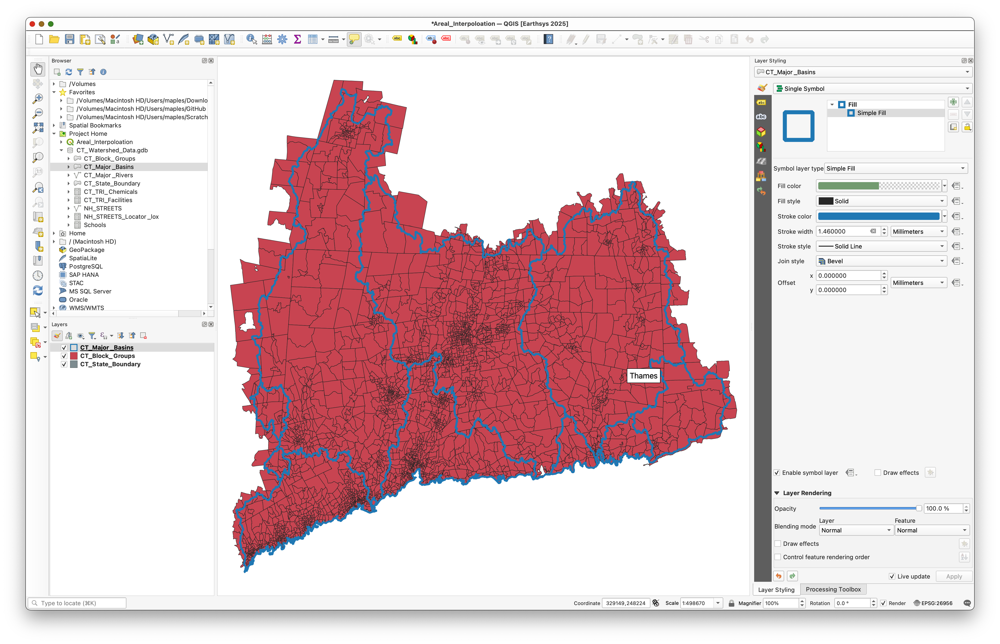
Take a moment to inspect the attribute tables.
You should notice that:
CT_Block_Groupscontains the demographic values you want to redistributeCT_Major_Basinscontains the watershed geography you want to report to
Concept note: Before doing any geoprocessing, it helps to look directly at the geometry problem. You should be able to see that many block groups do not line up with watershed boundaries.
Part 2: Calculate the Parent Area of the Block Groups
First calculate the original area of each intact block group. This becomes the denominator in the weighting step later.
Because the source data is inside a geodatabase, use a virtual field for this calculation.
- Open the attribute table for
CT_Block_Groups. - Look through the fields, including the population field you will use later.
- Open the Field Calculator.
$area
- Run the calculation.
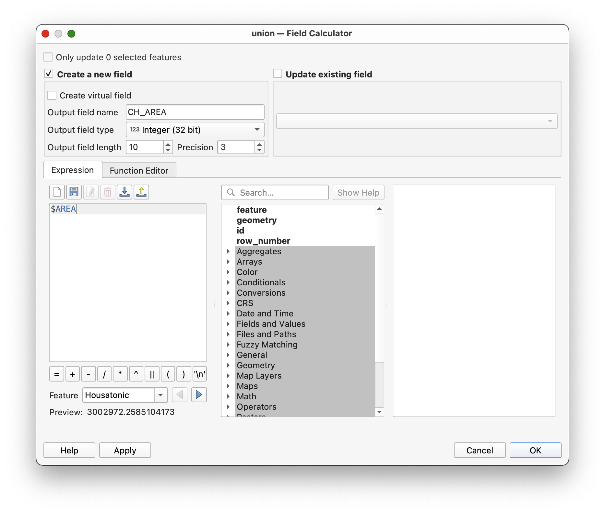
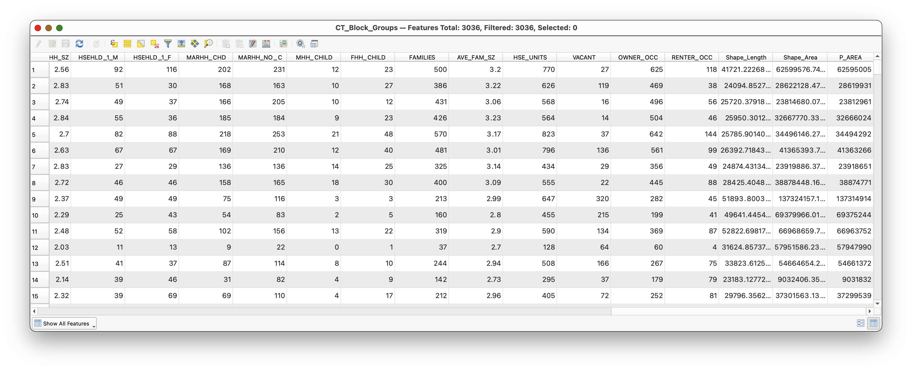
Concept note:
P_AREAstands for parent area, meaning the area of the original unsplit source polygon.
Part 3: Use Union to Split Block Groups by Watershed
Now create the overlap geometry that makes the interpolation possible.
- Open the Processing Toolbox.
- Search for Union.
Set:
Input layer:
CT_Major_Basins- Overlay layer:
CT_Block_Groups
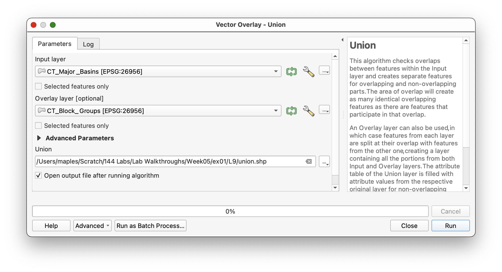
- Save the output as
union.shp. - Run the tool.
This may take a little time because the block group geometry is fairly detailed.
When the tool finishes, the union layer should contain:
- the attributes of both inputs
- new polygons wherever the source boundaries intersect
The P_AREA field should appear at the far right side of the union layer's attribute table.
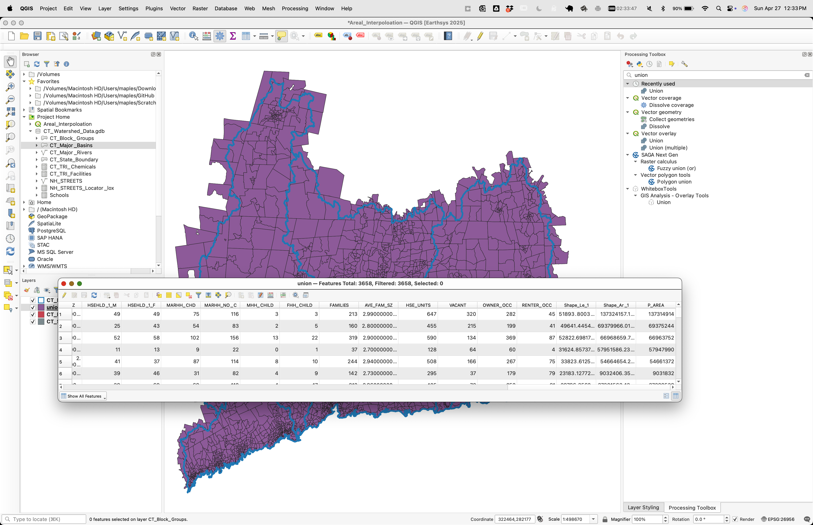
Concept note: The union layer creates the new analytical units. These smaller polygons are the pieces to which the population shares will be assigned.
Part 4: Calculate the Child Area
Now calculate the area of the new polygons created by the union process.
$area
- Run the calculation.
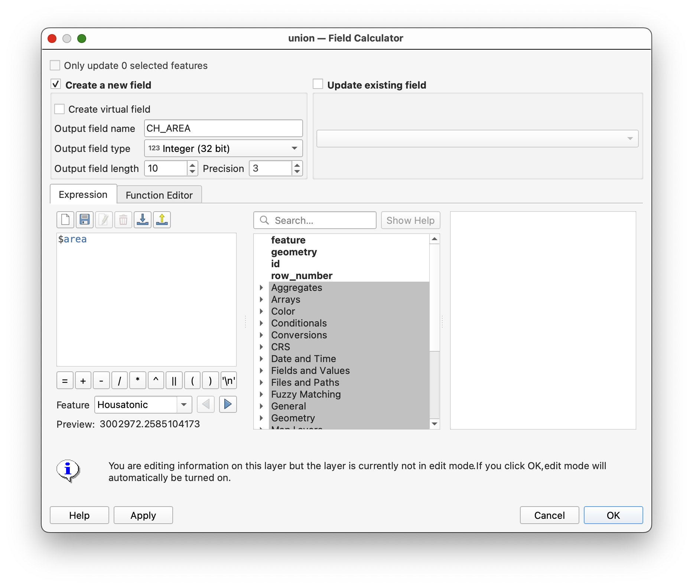
Concept note:
CH_AREAstands for child area, meaning the area of each smaller polygon created after the original block groups were split.
Part 5: Exclude Records with Null Parent Area
Some polygons in the union result will not represent valid block-group pieces for the interpolation step.
- Use the expression:
"P_AREA" IS NULL
- Click Select Features.
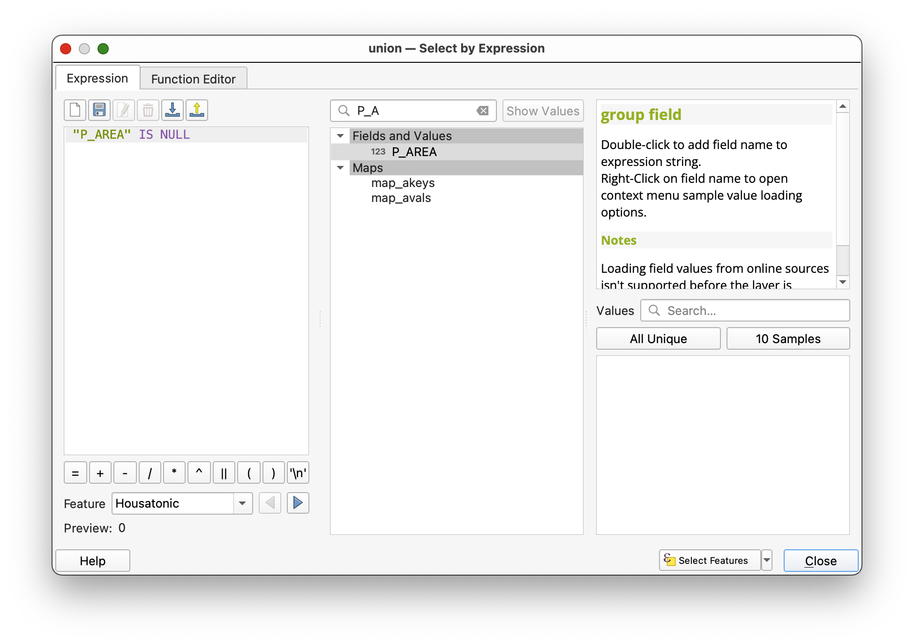
- Close the selection dialog and inspect the selected features.
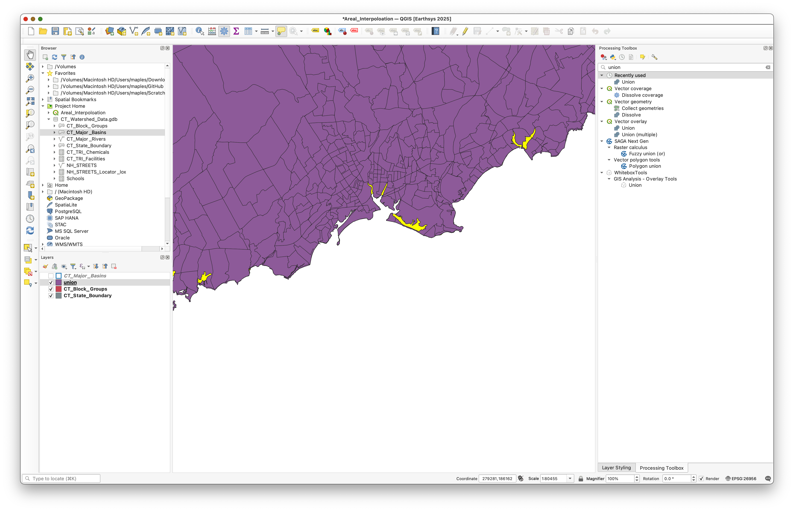
These are usually small sliver polygons that do not carry a valid parent-area value from the original block group layer.
- In the attribute table, click Invert Selection so that the selected records are the ones where
P_AREAis not null.
Concept note: If you leave null parent-area records in the next step, you risk dividing by null and generating invalid weights.
Part 6: Calculate the Area Weight
Now calculate the proportion of each child polygon relative to its original parent polygon.
- With the non-null records still selected, open the Field Calculator.
- Create a new field named
WEIGHT. - Use Decimal number (real) as the field type.
- If available, check Only update selected features.
- Use the expression:
"CH_AREA" / "P_AREA"
- Use a precision of several decimal places.
- Run the calculation.
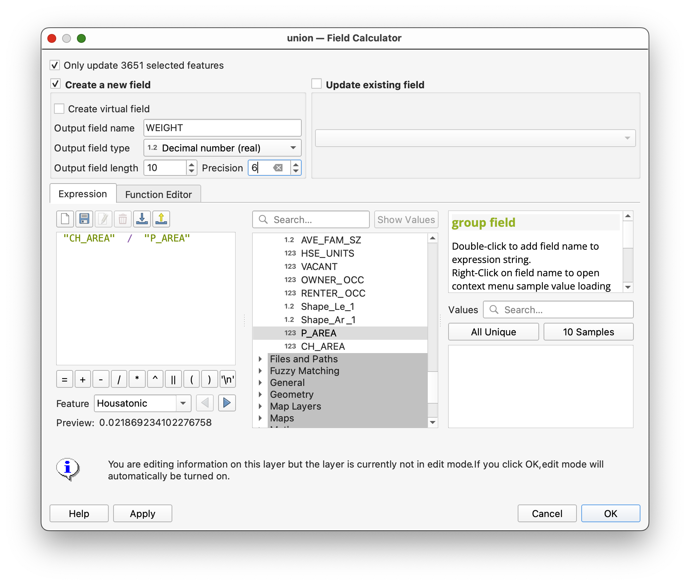
Many values will be 1, while others will be smaller than 1.
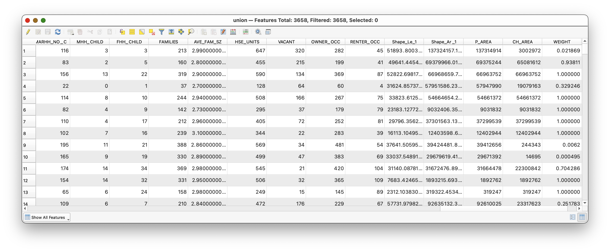
Concept note: A value of
1means the original block group was not split for that record. A value less than1means only part of the block group's area falls within that watershed polygon.
Part 7: Calculate Weighted Population
Now apply the area weight to the block-group population field.
- Open the Field Calculator again for the
unionlayer. - Create a new field named
WT_POP. - Use Decimal number (real) as the field type.
- Use the expression:
"WEIGHT" * "POP2004"
- Run the calculation.
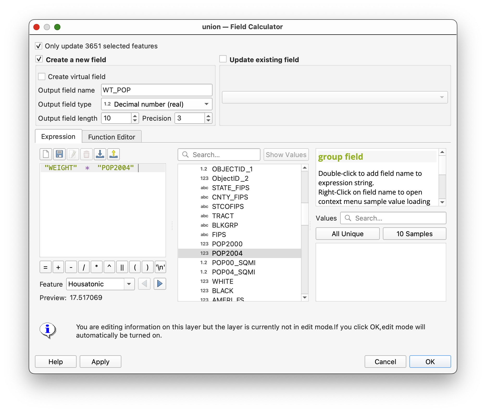
- Save edits if QGIS prompts you.
- Toggle off editing.
- Clear the selection.
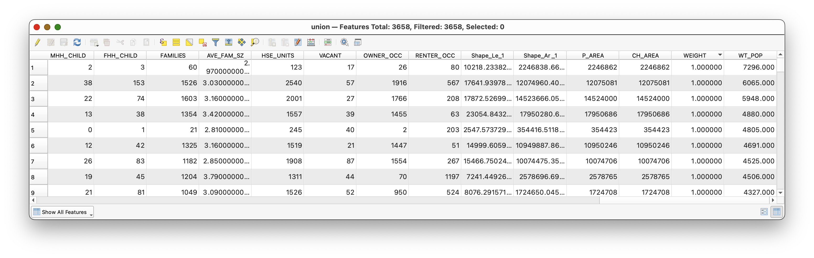
Concept note:
WT_POPis the estimated population assigned to each child polygon after the area-based redistribution. This is the value you will summarize by watershed.
Part 8: Summarize Weighted Population by Watershed
Now aggregate the interpolated values to the watershed level.
- Open Vector > Group Stats.
- Use the
unionlayer as the input table if prompted. Set:
Columns:
sum- Rows:
MAJOR Value:
WT_POPClick Calculate.
The result should be a grouped summary table showing the estimated total population for each major basin.
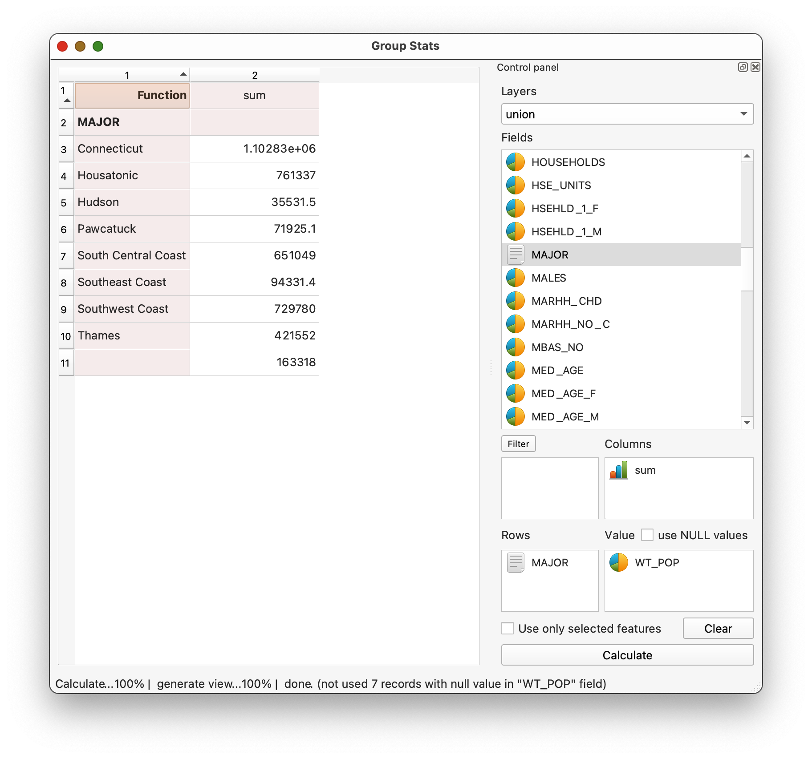
If you want to save the result:
- select the output table
- use the plugin export option to save the result as CSV
Concept note: This final step is where the interpolation becomes useful. Up to this point, you have been preparing weighted pieces. Group Stats recombines those pieces by watershed so the result can be interpreted in the target geography.
Deliverable
Submit:
- a screenshot of the Group Stats results showing weighted population by watershed
What You Should Understand After This Lab
By the end of the exercise, you should be able to explain:
- why areal interpolation is needed when two polygon systems do not align
- why the union step creates the geometry needed for weighting
- why
CH_AREA / P_AREAproduces the area share used in the estimate - why the final watershed population values are estimates rather than direct Census counts